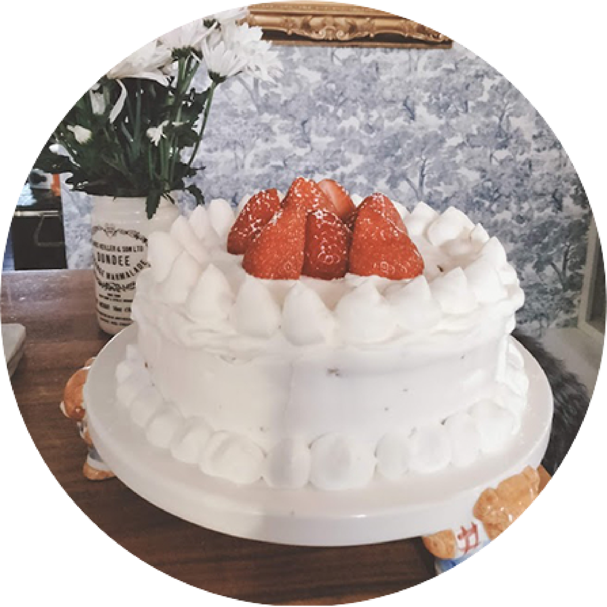

how to make
strawberry shortcake
The texture of this fresh strawberry sponge cake is pillowy soft from the cake flour, and extremely fluffy from the beaten egg whites and egg yolks. It's layered with fresh slices of strawberries and soft whipped cream. This is an excellent and easy Christmas cake to make for the holidays! This strawberry sponge is also very easy to decorate with just fresh cream and whole strawberries.
servings:8 prep time: 20 min cook time: 1 hr 30 min